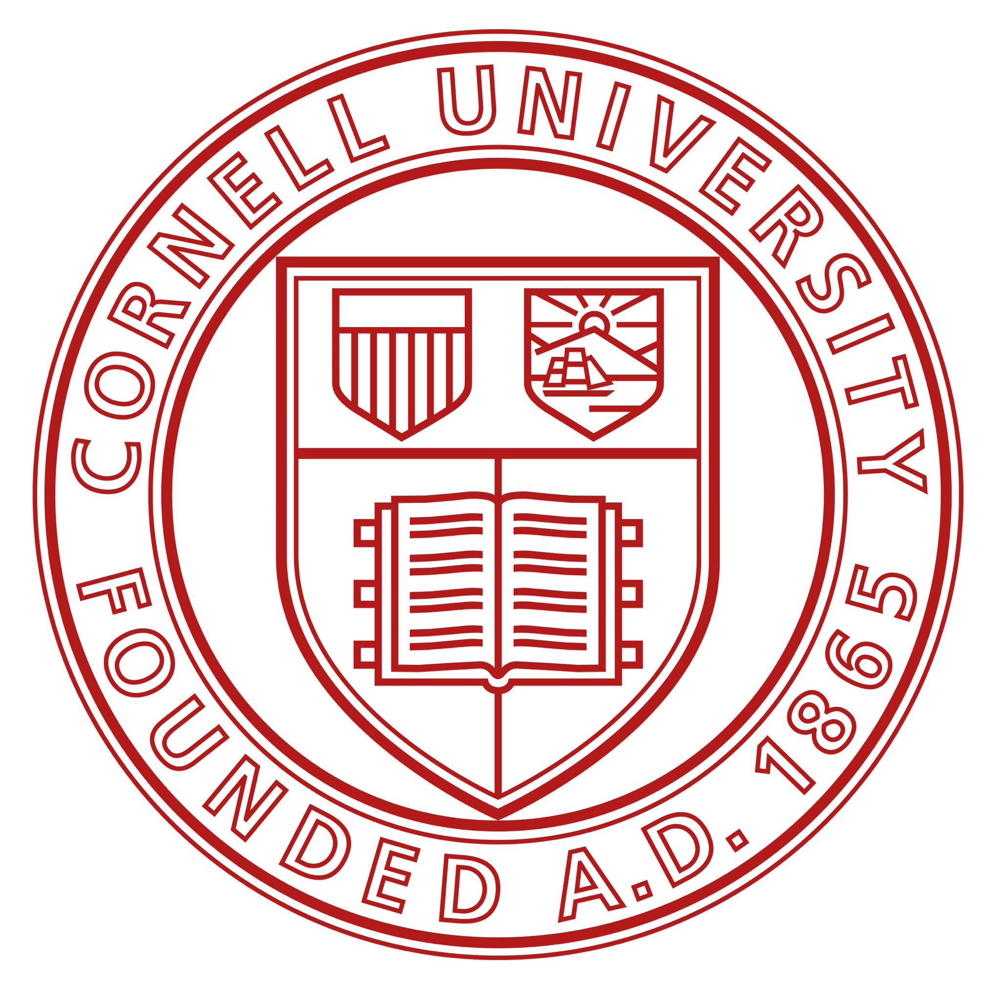

Stanford Intersect · 2025
Meet the Founder
Paper Mentor AI was created to give ambitious students access to serious, technically grounded research mentorship.
OD
Odysseas Drosis
Founder & Lead Mentor · AI/ML Engineer · Cornell University
Odysseas is an AI/ML engineer and experienced research mentor who has guided students through machine-learning research in healthcare, finance, sports analytics, computer vision, NLP, and other applied AI domains. His students have developed full research projects and published work in peer-reviewed and student research journals. Paper Mentor AI brings that same research-first approach into a dedicated 1:1 mentorship experience.
Published Student Research
Students personally mentored by founder Odysseas Drosis have produced published research across healthcare AI, financial forecasting, and sports analytics. Below are selected public examples.
Journal of Emerging Investigators · 2025
The Utilization of Artificial Intelligence in Enabling the Early Detection of Brain Tumors
Read publication
Journal of Emerging Investigators · 2024
Exploring the Effects of Diverse Historical Stock Price Data on the Accuracy of Stock Price Prediction Models
Read publication
National High School Journal of Science · 2025
Leveraging Machine Learning for Predicting NBA Player Performance
Read publicationThese examples reflect students previously and personally mentored by the founder. Publication outcomes vary by project, student, journal, and independent editorial review and are not guaranteed.
Research-Focused Mentorship
Our mentors are selected for strong backgrounds in AI, machine learning, research, and technical communication. Mentor backgrounds may include leading universities and industry research environments.

University names and logos indicate educational or research backgrounds of individual mentors and do not imply sponsorship, endorsement, or affiliation with Paper Mentor AI.
Why Students Work with Paper Mentor AI
The goal is not simply to complete a coding project. Students learn how to think, build, evaluate, and communicate like researchers.
- Personalized 1:1 research mentorship.
- Project topics tailored to each student's interests and experience.
- Hands-on implementation of real machine-learning models and experiments.
- Guidance on reading literature, designing methodology, and evaluating results.
- Structured support for writing a polished research paper.
- Guidance on identifying appropriate journals, conferences, or competitions.
Examples of Student Research Topics
Projects are designed around the student's interests while maintaining a realistic scope and a clear research question.
- Cyberbullying detection with transformer-based NLP.
- MRI brain tumor detection with CNNs.
- Stock prediction using LSTMs and news sentiment.
- Sports performance prediction using machine learning.
- Climate and environmental forecasting.
- Fake news and misinformation detection using NLP.
- Air pollution prediction with machine learning.
What Working with Paper Mentor AI Looks Like
Students move from a broad idea to a focused research question, implementation, experimentation, analysis, and academic writing.
Students learn how to:
- Read and understand relevant AI research.
- Define a realistic research question and methodology.
- Build ML models in Python.
- Design and evaluate experiments.
- Interpret results critically.
- Write and revise a polished research paper.


Ready to Start an AI Research Project?
Tell us about your interests, experience, and goals. We will use your application to determine whether Paper Mentor AI is a good fit and what kind of research project could be realistic for you.
Apply for Mentorship